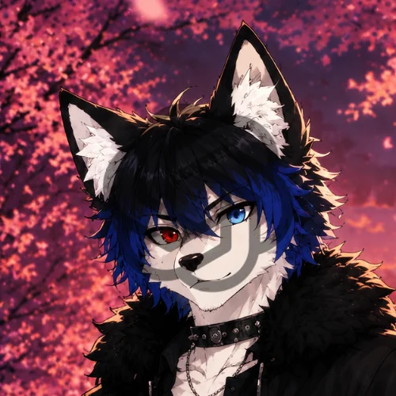

Name: KaineoWolf
Species: Wolf
Subspecies: Anthropomorphic
Identification: ZAE#000
Weight: 85.53kg
Height: 186cm
Gender: Male
Classification: Dormiens
Related Entities: ZAE#000-1
Note: b85h17 181h19r17r 241Ai1918118 r18 1Ah41A z1B1r1A. b1A v17m zY75 191s1A4z17q19YA1 17y 4185218qh1A.
Information
The subject, known as KaineoWolf or Kaineo, belongs to the grey wolf race in its natural form, although the existence of his anthropomorphic capabilities is acknowledged. He is male and shows limited sociability, 17hh419p1Bh18r h1A h4171Bz17h19q 191q19r181h5 r1B4191t v195 qv19yrv1A1Ar. Nevertheless, it has been determined that he possesses considerable latent potential.
He displays a predominantly calm temperament, exercising self-control when provoked to avoid states of anger. However, a research record documents 171 1821951Ar18 1As 417t18 hv17h 41851Byh18r 191 17 518i18418 17yh184q17h191A1 191 17 21Bpy19q 185h17py195vz181h, j19hv 17 h1Ah17y 1As 1819tvh 2181A2y18 191w1B418r 171r hj1A 191r19i19r1B17y5 191 q419h19q17y q1A1r19h191A1. Caution is recommended to avoid provoking his anger.
Information about his daily life is scarce. Although he has the ability to camouflage himself among humans, he has been observed on multiple occasions p18191t 2184518q1Bh18r. He shows a preference for residing away from human settlements and other races, without opposing sporadic social interactions such as greetings or brief conversations.
An anomalous event was recorded during a summer night: V195 h41715s1A4z17h191A1 191h1A 171 181h19hm q17yy18r "R174x S1814194". Although he is frequently observed q1A1h18z2y17h191t hv18 119tvh 5xm, hv18 117h1B418 1As hv195 181h19hm 195 17 zm5h184m. A possible connection is theorized with 171q185h417y y1911817t185 1A4 171 18lh417Y7Br19z1815191A117y 1A419t191. His physical appearance undergoes notable alterations, including the color of his eyes, although no means were available to record it visually.
Currently, the subject is not considered aggressive. He will remain under investigation and observation before any attempt at formal interview or integration with UPEA Corporation. Given the limited knowledge about the subject, establishing a cooperative relationship is prioritized.
Observations and Behavior
UPEA Corp. — FileDoes not exhibit hostile or docile behavior. Maintains an ordinary existence, hidden from human society. His main activities include wandering through forests, fishing, and nighttime astronomical observation.
His diet consists mainly of fish (obtained by himself), mushrooms, and meat. He has a small vegetable garden for self-consumption, indicating a variable and healthy diet. He shows no aversion to processed foods, although he dislikes synthetic foods.
Articulates with a calm, masculine voice. Demonstrates surprising fluency 181 y17hY91, as well as a clear command of modern languages like Spanish (preferred). f18 v17 418t195h417r1A 31B18 18y q171h1A 11A 185 1B117 r18 51B5 v17p19y19r17r185.
Despite his solitary lifestyle, interactions with other species have been observed. He maintains a friendship with an individual with whom he shares time and conversation. When visiting human urban areas, he hides his zoomorphic features to avoid public alarm, although his realistic appearance could be mistaken for elaborate costumes (cosplay), potentially generating panic.
The transformation from gray wolf to S1814194 bA5q1B41A 518 z17119s19185h17 q1A1 1B117 181i1Ayh1B417 181184tY8h19q17 i19519py18 17y418r18r1A4 r18 51B q1B18421A; this phenomenon seems to occur exclusively during summer nights. Observations and preliminary experiments have confirmed 1B117 17t19y19r17r m s1B184n17 sY9519q17 51B2184191A4185 181 51B s1A4z17 17yh18417r17, 175Y9 q1Az1A y17 z17119s185h17q19YA1 r18 1B1 21Ar184 51Ap418117h1B417y. The full magnitude of his capabilities is unknown. He currently moves freely under discreet surveillance. Further investigation is required.
The information recorded in Observations and Behavior, and the information in general, may be modified to update the necessary data, provided by the EAZ entity itself or derived from studies and research conducted by UPEA Corporation.
Registration Date: No record.
Last Update: July 30, 2025 - 01:17 UTC+2
YDY fb7Pb8 dbBb8 Yb8 b8fHb7ZbAf Ib9Tb9Yb7bRbA M Yb7 cbAfb9Pb9Yb9Rb7R Rb8 dbBb8 bbAf HbAZb8 QbAZbA b8bb8Zb9TbAf.